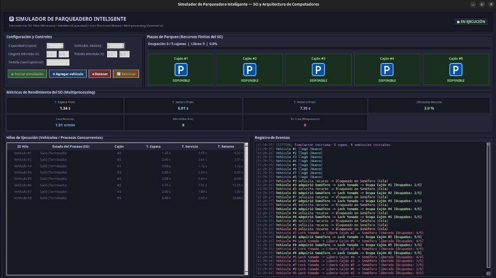

El proyecto consiste en un simulador interactivo de parqueadero inteligente en Python con interfaz gráfica en Tkinter. Su objetivo fundamental es representar visual y cuantitativamente cómo un Sistema Operativo (SO) gestiona la concurrencia, sincronización y competencia de múltiples procesos que compiten por un conjunto finito y compartido de recursos del sistema.
| Concepto en Sistemas Operativos | Implementación en el Simulador | Primitivo / Componente |
|---|---|---|
| Gestor de Recursos del SO | Controlador central del parqueadero | ParkingManager (capa core) |
| Recursos Finitos (CPU / RAM / E-S) | Cajones físicos del parqueadero (capacidad fija N = 5) |
Estructura compartida _slots |
| Procesos Concurrentes / Hilos | Cada vehículo que ingresa, se estaciona y sale | threading.Thread (por vehículo) |
| Semáforo Contador | Control de cupos disponibles; bloqueo al saturarse | threading.BoundedSemaphore(5) |
| Mutex / Exclusión Mutua | Sección crítica al reclamar o liberar cajón y contador | threading.Lock() |
| Proceso Paralelo Independiente | Telemetría, cálculo de métricas SO y persistencia CSV | multiprocessing.Process |
Cada vehículo emula fielmente los estados clásicos de un proceso en el SO:
1) Nuevo (ARRIVING): El hilo inicia con una latencia aleatoria de llegada para simular solicitudes asíncronas.
2) Listo / Bloqueado (WAITING): El hilo invoca semaphore.acquire(); si la capacidad está colmada, el SO suspende el hilo en la cola de bloqueo.
3) En Ejecución (PARKED): Al obtener cupo, ingresa a la sección crítica (with lock:) para reclamar su cajón físico y permanece en servicio durante su tiempo aleatorio de estadía.
4) Terminado (EXITED): Accede a sección crítica para desocupar el cajón y ejecuta semaphore.release() para ceder el recurso a los hilos en cola.
BoundedSemaphore(5). Si el parqueadero está lleno, las solicitudes entrantes quedan bloqueadas sin consumir ciclos de CPU inútiles (se evita el busy waiting).occupied están protegidos con with self._lock:. Se diseñaron dos secciones críticas atómicas y ultra-rápidas (ingreso y salida). El hilo nunca retiene el cerrojo durante su tiempo de parqueo, permitiendo alta concurrencia.multiprocessing.Queue, calcula las métricas de rendimiento en tiempo real y persiste el log en CSV (csv_repository.py) sin restar fluidez a la interfaz.ui_queue y la vista se refresca de forma segura cada 100 ms vía root.after().
En la corrida experimental registrada con 5 cupos y 8 vehículos:
#3, #2, #7, #5, #4) adquirieron el semáforo sin demora (T. Espera = 0.00 s), ocuparon los cajones 1 al 5 y coparon el sistema (5/5).#8, #1, #6) solicitaron cupo con el semáforo en cero, pasando a estado de bloqueo real en la cola del SO.13:29:30, el Vehículo #2 terminó su servicio, tomó el Lock para desalojar el Cajón #2 e hizo release() del semáforo. Instantáneamente, el SO despertó al Vehículo #1 (que llevaba 1.45 s en espera), el cual tomó el Lock y se apropió del cajón liberado sin ninguna colisión. Lo mismo ocurrió con los vehículos #8 (T. Espera = 4.49 s) y #6 (T. Espera = 4.75 s).| Métrica de Rendimiento SO | Valor Obtenido | Interpretación en Sistemas Operativos |
|---|---|---|
| T. Espera Promedio (Avg Waiting) | 1.34 s | Tiempo medio que los procesos permanecieron suspendidos en cola antes de recibir el recurso. |
| T. Servicio Promedio (Burst Time) | 6.01 s | Tiempo medio durante el cual los vehículos mantuvieron asignado el recurso (estacionados). |
| T. Retorno Promedio (Turnaround) | 7.35 s | Tiempo de ciclo completo: \(T_{\text{retorno}} = T_{\text{espera}} + T_{\text{servicio}}\) (\(1.34\text{ s} + 6.01\text{ s}\)). |
| Tasa de Atención (Throughput) | 1.51 veh/min | Productividad del sistema: vehículos atendidos completamente por unidad de tiempo. |
| Utilización del Recurso | 3.0% | Proporción acumulada de tiempo que los cajones estuvieron en uso respecto al total disponible. |
BoundedSemaphore para gobernar el aforo total y Lock para gobernar las modificaciones de cajones previno de manera categórica las condiciones de carrera y la sobreasignación de cupos.